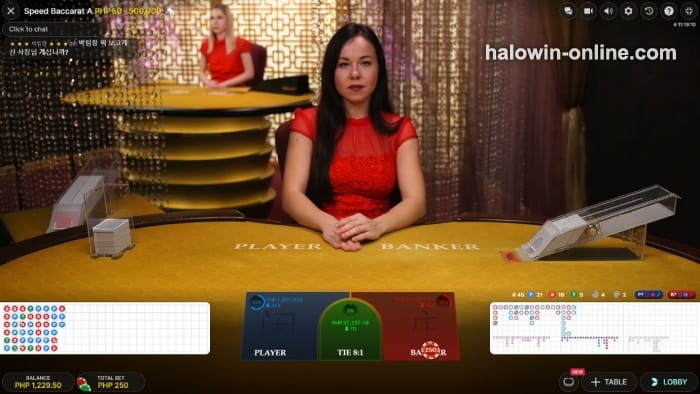

Tutorial ng Diskarte sa Fibonacci Baccarat
Ang diskarte sa Fibonacci Baccarat ay nakabase sa Fibonacci sequence na nilikha ng Italyanong mathematician na si Leonardo Pisano. Ito ay isang hanay ng mga numero na madalas lumabas sa math at sa kalikasan, pati na din sa Baccarat. Sa gabay na ito, sasabihin namin ang tungkol sa diskarte sa Fibonacci baccarat at mabibigyan namin kayo ng kaunting mga tips upang i-maximize ang halaga nito.
Game Introduction
Lahat ay tungkol sa math sa mga laro ng casino at kalikasan, kaya nagiging natural ang diskarte sa Fibonacci baccarat. Ang diskarte sa Fibonacci Baccarat ay nakabase sa Fibonacci sequence na nilikha ng Italyanong mathematician na si Leonardo Pisano. Ito ay isang hanay ng mga numero na madalas lumabas sa matematika at sa kalikasan. Ang hanay na ito ay karaniwang nagsisimula sa 0, ngunit ito ay hindi madalas pinapansin at nagsisimula na lang sa 1. Ang bawat numero sa pagkasunod sunod na ito ay ang sum na mga dalawang naunang numero. Ang sequence ay malapit na kaugnay ng golden ratio at ang basehan para sa isang sure win na formula sa baccarat.

Hindi gaya ng Martingale o anumang negative/positive na progression system, ang Fibonacci ay itinuturing na mas linear na opsyon. Susundan lamang ang mga numero sa sequence ng pagkatalo at makakagamit ng mga espesyal na kondisyon upang manalo. Habang ito ay kakaiba, maaari itong i-aaply sa lahat ng mga uri ng baccarat, at ito ay madali lang sundan. Sa gabay na ito, sasabihin namin ang tungkol sa diskarte sa Fibonacci baccarat at mabibigyan namin kayo ng kaunting mga tips upang i-maximize ang halaga nito.
Diskarte sa Fibonacci Baccarat: Linear Betting System
Tulad ng binanggit kanina, ito ay isang linear na sistema ng pagtataya. Sa maikling salita, hindi ito nakakategorya sa positive/negative progression umbrella, kaya hindi kailangan doblehin ang mga taya upang makabawi sa mga taya o samantalahin ang mga winning streaks. Hindi na din kailangan bumuo ng sariling sequence gaya ng Labouchere na sistema ng pagtaya. Ang sure-win formula ng baccarat ay hango sa Fibonacci sequence na kailangan mong sundin.
Sa mga hindi alam, ang sequence ay ganito:
-
1 1 2 3 5 8 13 21 34 55 89
Maaaring mas mahaba ito kung kinakailangan, kaya maaaring mag-extend sa isang baccarat online session na hanggang gaano katagal mong gusto. Kung mapapansin mo, ang bawat numero sa sequence ay sum ng naunang dalawan numero. Ito ay hindi agresibong pagpapakita na magagamit sa mga baccarat games, hindi gaya ng Martingale na dumodoble sa mga taya pagkatapos ng mga pagkatalo.

Ang katotohanan na mayroon itong sequence na susundan ang magpapadali ng diskarteng ito para sa mga baguhan. Kung ikaw ay maingat at hindi ikaw naglalaro ng malakihang taya, mas may makukuha ka sa sistemang ito.
Diskarte sa Fibonacci Baccarat: Paano Gamitin ang Diskarte sa Fibonacci Baccarat?
Malinaw na kailangan lang sundin ang Fibonacci sequence. Parehas ng negative progression systems, ikaw ay magtataya sa mga tukoy na bilang ng mga pagkatalo, at babalik sa orihinal na taya ng EsballPH HaloWin Tagalog upang manalo. Siyempre, ang unang bagay na dapat mong gawin ay ang i-set ang iyong default bet unit, at gaya ng iba pang diskarte, irerekomenda naming liitan muna ang taya. Ang diskarte sa Fibonacci baccarat ay hindi kasing agresibo ng Martingale, ngunit maaari kang maubusan sa bankroll kapag ikaw ay tuloy tuloy na nalugi sa mga live baccarat variations.
Tignan natin ang isang halimbawa at makita kung paano ito gumagana sa lahat ng mga baccarat variations. Para sa artikulong ito, i-set ang unit ng pagtaya sa $1 para mas madaling kalkulahin. Sa tayang ito, ang sure-win formula sa baccarat ay dapat maging ganito:
-
Bet $1 - lose - bet $1 again - lose - bet $2 - lose - bet $3 - lose - bet $5 - lose - bet $8 - win - bet $1 - win - bet $1 - lose - bet $1 - lose - bet $1 - lose - bet $2 - win - bet $1
Ang malinaw dito ay ang pagsunod sa Fibonacci sequence sa pagkatalo, at babalik ito sa taya na $1 (o kung ano man ang iyong default bet unit) sa mga panalo. Tutukan nang maigi ang table limit. Maraming baccarat variations ang hindi ka pagtatayain nang lagpas sa $500, at kapag ikaw ay tuloy tuloy na nalugi, maaabot mo agad ang table limit.
Hindi gaya ng ibang mga baccarat systems, ang diskarte sa Fibonacci baccarat ay hindi binabawi ang iyong pagkatalo. Sa halip, ito ay naniniguro ng tuloy tuloy na kita at ang posibilidad na makabawi sa mga pagkatalo at manalo din ng malaki kasabay nito, ngunit ito ay mangyayari mamaya sa sequence. Ang isa pang bagay na dapat isipin ay ito - ikaw ay babalik sa orihinal na unit sa mga panalo, ngunit pag ito ay lalabas lamang sa dulo ng sequence, kailangan mag-taya sa pamamagitan ng pagbalik sa dalawang pwesto sa sequence.
Diskarte sa Fibonacci Baccarat: Ang Paggamit ng Diskarte sa Fibonacci
Habang ito ay isang progressive betting system, ang diskarte sa Fibonacci baccarat ay hindi inaalis ang mga kabuuang lugi sa pamamagitan ng isang panalo. Sa halip, bumabawi ito sa dalawang huling pagkalugi, dahil ang bawat numero sa sequence ay kombinasyon ng mga dalawang naunang taya.
Kapag ginagamit namin ang sure win formula ng Fibonacci baccarat, nakikita namin na mas madali kapag isinulat ang sequence sa isang papel. Tignan ito ng maigi - ito ang magpapadali sa lahat. Sa aming playthrough, nakita namin na magkakaiba ang mga resulta. Hindi ito nangangako ng malaking panalo dahil ikaw ay babalik sa orihinal na EsballPH HaloWin Tagalog bet unit (o dalawa), ngunit ang maganda dito ay hahayaan kang makabawi sa mga huli mong pagkalugi.
Ang pangunahing kalamangan ng system na ito ay mamiminimize ang iyong mga pagkatalo. Hindi ka man kikita ng malaki, ngunit hindi ka din mauubusan agad ng pera.
Diskarte sa Fibonacci Baccarat: Mga Pros at Cons
Gaya ng anumang baccarat betting system, ang Fibonacci ay mayroong mga kalamangan at kaunti ding kawalan.
Pros
-
Isang linear betting system na namamahala ng mga pagkatalo ng mas maayos kaysa sa Martingale
-
Mas mabagal na system na nakalaan sa mga slow-paced baccarat na variations
-
Makakatulong sa mga maiklingwin streaks sa pamamagitan ng pag-secure ng maliliit na kita
-
Madaling matutunan at gamitin
Cons
-
Hindi maapektuhan ang edge ng house
-
Sunod sunod na pagkatalo kapag nagtuloy tuloy
Pangwakas ng Diskarte sa Fibonacci Baccarat: Diskarte na Hindi Agresibo at Pagkakakitaan
Ang sure-win formula sa Fibonacci ay hindi agresibo at maaaring pagkakitaan kapag sunod sunod ang panalo. Sa isang banda, hindi ito susubukang bawiin lahat ng iyong pagkatalo sa isang subok lamang - babawiin lang nito ang huling dalawang pagkatalo. Ito ay naiiba mula sa Martingale o sa kahit anong baccarat system.

Sa positibong banda, kapag isinulat ito sa papel at sumusunod sa mga tuntunin, ito ay pagkakakitaan sa maikling takbo nito. Kapag ikaw ay sunod sunod na natalo, ikaw ay lalagpas sa table limit agad, lalo na kapag ito ay nasa mababang $500s. Ngunit dahil kailangan maglaro na may sistema, ang diskarte sa Fibonacci baccarat ay magandang bagay sa lahat ng klase ng manlalaro.
Ang EsballPH ay ang pinakamahusay na laro ng slot online casino sa Pilipinas.
Pagkatapos mag-log in, maaari mong tangkilikin ang new member register free 100 ngayon.
Simula sa 2024, maaari kang makakuha ng 100 free bonus casino no deposit philippines.
Bilang karagdagan, mayroon kaming iba pang mga diskwento at mga hangganan na naghihintay para sa iyo na mag-claim kaagad.
You can also click to enter the Online Casino Bonus & free 200 promotion introduction, which provides more diverse casino bonuses.
Baccarat na Strategy